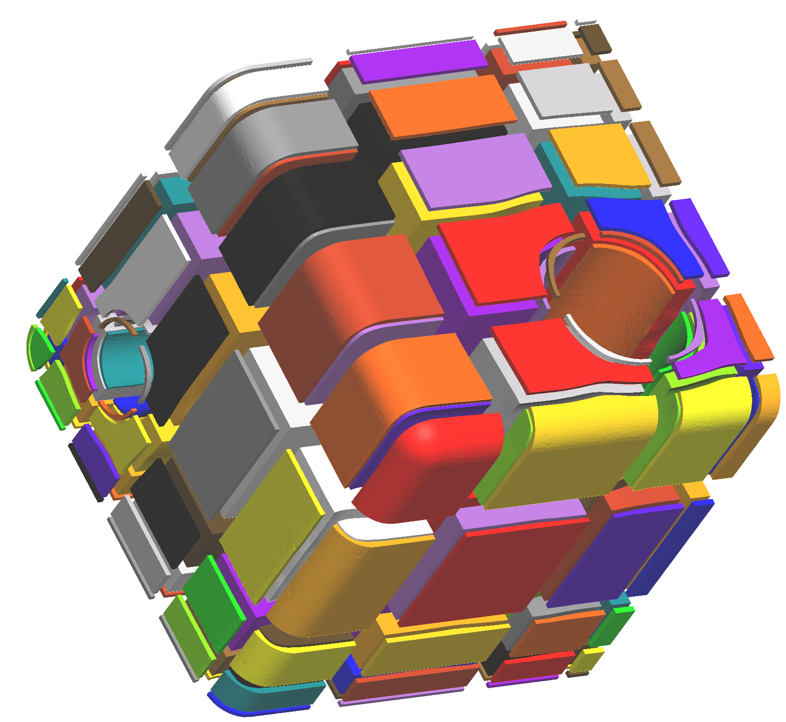

Maxence Reberol's homepage
E-mail: maxence.reberol@uclouvain.be
Address:
Avenue Georges Lemaître 4, Louvain-la-Neuve, Belgium
Presentation

I am a postdoctoral researcher at UCLouvain
working with Jean-François Remacle
in the context of the Hextreme ERC project. My research interests
are automatic block decomposition, block-structured hexahedral meshing and robust hex-dominant meshing.
Before that, I did a PhD in the Alice team (Inria Grand-Est)
focusing on different aspects of hex-dominant meshes: generation, numerical simulation with the finite
element method and evaluation. My PhD supervisors were Bruno Lévy
and Sylvain Lefebvre.
Publications
- Multiple approaches to frame field correction for CAD models
- Maxence Reberol, Alexandre Chemin, Jean-François Remacle
- 28th International Meshing Roundtable, 2019
-
PDF,
Slides,
CAD models
- Maillages hex-dominants : génération, simulation et évaluation
- Maxence Reberol
- PhD thesis, 2018
-
Link,
PDF,
Slides
- Hexahedral Meshing: Mind the Gap!
- Nicolas Ray, Dmitry Sokolov, Maxence Reberol, Franck Ledoux, Bruno Lévy
- Computer-Aided Design, 2018
-
Link,
Preprint
- Computing the distance between two finite element solutions defined on different 3D meshes on a GPU
- Maxence Reberol, Bruno Lévy
- SIAM Journal on Scientific Computing, 2018
-
Link,
PDF,
Code (on Github)
- Low-order continuous finite element spaces on hybrid non-conforming hexahedral-tetrahedral meshes
- Maxence Reberol, Bruno Lévy
- Technical report, 2016
-
Preprint
Education
-
-
PhD in Computer Science
- Inria Grand-Est / Université de Lorraine
- 2015 - 2018
-
-
Engineering degree
- École supérieure d'électricité
- 2011 - 2014
-
-
M.Sc. in Civil engineering
- École Centrale Paris
- 2013 - 2014
Teaching
- 2017: Course on the implementation of FEM in C++ and student project supervision, ENSG
- 2017: Tutorials on programming and algorithms, ENSG
- 2017: Tutorials on numerical analysis, ENSG
- 2016: Tutorials on programming and algorithms, ENSG